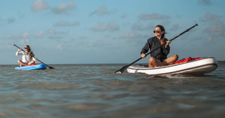
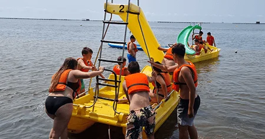
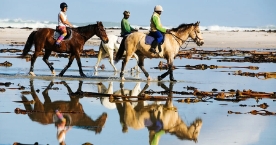
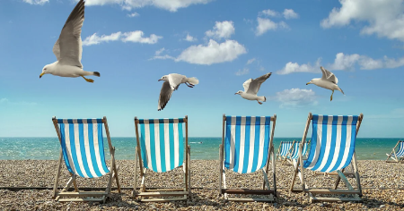
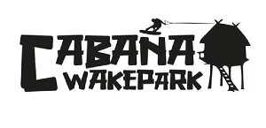
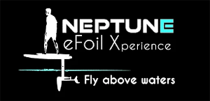

Nuestras actividades están adaptadas a todos los públicos, de todas las edades, tanto individuales como para grupos, compartiendo una actividad todos juntos (equipos de empresas, escuelas y colegios, hoteles, casales de verano, despedidas de soltero, operadores turísticos, agencias de viajes o grupos de amigos) .
¡ Atrévete a probar nuestras actividades de ocio al aire libre y disfruta del mar, del hábitat natural, del
descubrimiento y vivir tu aventura !

Kaiak
Ven y navega en kayak toda la temporada en La Cabaña !
Ponemos a tu disposición el material necesario para que navegues con toda tranquilidad y conozcas nuestra bahía. Te indicaremos las zonas de seguridad recomendadas en función de las condiciones meteorológicas.
Todos nuestros kayaks son autovaciables e insumergibles.
Podéis navegar en individual, doble, triple o cuádruple (2 adultos + 2 niños).
Edad: menores de 12 acompañados de un tutor legal.
En función de su nivel, podemos aconsejarle las rutas más adecuadas.
¿QUÉ HAY QUE TRAER ?
Bañador, Camiseta sintética o licra, Protector solar, Calzado que se pueda mojar, Agua y Ropa de repuesto.
Consultar las tarifas

Kaiak Pesca
Si vuestra afición es pescar y disfrutar de momentos de calma, tenemos kayaks confortables preparados para la actividad con cañeros, respaldos y botes estancos.
Sólo tienes que llevar tu caña, tu señuelo, tus utensilios y los consumibles de repuesto para una buena pesca.
Las autoridades, eventualmente, pueden pedirle su licencia de pesca.
CONSEJO :
Las primeras horas de la mañana son el mejor momento para disfrutar de la pesca, los peces están hambrientos después de la noche, el mar está muy plano casi sin oleaje, el sol aún no pica mucho y los vientos suelen ser muy suaves.
¡ Pezqueñines, No Gracias !
Consultar las tarifas

Paddle Surf
Ven y navega con paddle toda la temporada en La Cabaña
!
Tenemos a tu disposición el material necesario para que navegues en tranquilidad y conozcas nuestra bahía. Te indicaremos las zonas de seguridad recomendadas en función de las condiciones meteorológicas.
Todos nuestras planchas son insumergibles, ideales para practicar solo o en grupo el Paddle Yoga.
Puede navegar en individual o en grupo con nuestro súper Paddle XXL, a los más jóvenes de casa les encanta !.
Edad: menores de 12 acompañados de un tutor legal.
En función del vuestro nivel, podemos aconsejaros las rutas más adecuadas.
¿QUÉ HAY QUE TRAER ?
Bañador, Camiseta sintética o licra, Protector solar, Calzado que se pueda mojar, Agua y Ropa de repuesto.
Consultar las tarifas

Pedalos
Dirigidos a todo tipo de personas, los pedalos o hidropedales son embarcaciones impulsadas por pedales que permiten navegar cerca de la costa, relajarse y disfrutar tomando el sol mientras se contempla el paisaje desde una embarcación muy estable.
Es una actividad que se puede desarrollar en grupo o individualmente. Sólo hace falta un bañador, una buena protección solar y un pedaleo suave y uniforme.
Una buena opción para pasar un buen rato en familia para hacer tiempo y hambre mientras esperais vuestra paella o fideuada.
¡ Ven y navega con pedalo toda la temporada en La Cabaña !
Consultar las tarifas

Wakeboard
Si te gusta sentir la adrenalina, en nuestro Wake Parc tenemos diferentes recorridos, con 3 líneas que se adaptan a todos los niveles para disfrutar de una buena experiencia.
· LÍNEA 1 - INICIACIÓN : 70 metros de línea para tu iniciación con el wakeboard, esta línea también dispone de varios módulos básicos.
· LÍNEA 2 - AFICIONADO : 120 metros de línea, 25 metros de ancho, dos kickers, un doble up plano de 7 metros de largo, uno flatbar de 12 metros de largo y 70 centímetros de altura, todo pensado para que disfrutes de un buen jibbing.
· LÍNEA 3 - LITTLE POOL : 32 metros de piscina superior con playa para un buen arranque y 70 metros de piscina inferior. Podréis disfrutar de dos raíles de 14 metros y 3,5” de pasamano de inox, para los riders más experimentados.
Consultar las tarifas

eFoil
Te imaginas la sensación de volar por encima el agua ?
Pues ahora puedes hacerlo realidad con el eFoil.
¿En qué consiste? El Foil es una modalidad de deporte náutico que consiste en volar navegando sobre el agua. El eFoil es una plancha con un motor eléctrico y puede alcanzar unos 40 km por hora, controlada mediante un mando a distancia.
Cuando estás volando en el eFoil sientes el silencio en el agua, casi sin fricción, y esto genera una sensación de paz, libertad e independencia que no te proporcionan otros deportes náuticos. Cualquier momento del año (incluido el invierno) es bueno para practicar la modalidad de eFoil, lo importante es ir bien equipado con una combinación de neopreno y un casco confortable que flote.
¡ Atrévete a volar sobre el agua, sintiendo libertad !
Consultar las tarifas

Excursiones a Cavallo
¡ Un encuentro sublime con la naturaleza !. Siente la conexión con el mar y los caballos con nuestras excursiones de playa y ribera.
Vive la pasión de la playa a caballo : Un paseo inolvidable donde el sol, la arena y el mar se fusionan con la elegancia del paso a caballo.
Convierte tus sueños en huellas en la arena : Descubre la felicidad de montar a caballo en la costa, donde la aventura se mezcla con la tranquilidad.
Una travesía mágica hacia la plenitud : Vive la experiencia inigualable de cabalgar por la playa, un instante eterno de conexión con la naturaleza.
Consultar en la barra las tarifas y la disponibilidad

Hamaking
Una actividad de alto riesgo, pero apta para todos los públicos, sobre todo para los que ya tenemos una edad.
Después de una mañana de playa con muchas actividades y de haber tragado una buena comida, desearás agenciarte una hamaca para digerirlo todo bajo la sombra del pinar.
Correrás un gran riesgo de sentirte atraído por una buena siesta y no querer irse nunca de La Cabaña.
Puedes escoger entre el hamaking o la zona chillout para reponer o relajar tu espíritu.
¡ Buen descanso !
Activitat gratuita que t'oferim a La Cabaña
Contacta con nosotros,Llama a los teléfonos siguientes para conocer la disponibilidad y hacer vuestra reserva:
-
 · Kayak i Paddle ···
La Cabaña : +34 977 74 02 92
· Kayak i Paddle ···
La Cabaña : +34 977 74 02 92
-
· Wakeboard ···
Wake Park : +34 621 20 24 50
-
· Efoil ···
Neptune : +34 644 73 36 69
-
 · Excursiones a Cavallo ···
Consulte los precios y la disponibilidad en la barra del bar de La Cabaña.
· Excursiones a Cavallo ···
Consulte los precios y la disponibilidad en la barra del bar de La Cabaña.
Lista de precios
-
Kayak individual
- 1 h. ... 10€
- 2 h. ... 13€
- 3 h. ... 15€
-
Kayak doble/triple
- 1 h. ... 15€
- 2 h. ... 20€
- 3 h. ... 25€
-
Paddle Surf
- 1 h. ... 10€
- 2 h. ... 15€
- 3 h. ... 20€
- Paddle XXL · 1 h. ... 60€
-
Pedalos
- 1 h. ... 20€
- 2 h. ... 30€
- 3 h. ... 40€
Lista de precios
Nuestros
colaboradores :

Wakepark
· +34 621 20 24 50

Neptune eFoil
· +34 644 73 36 69